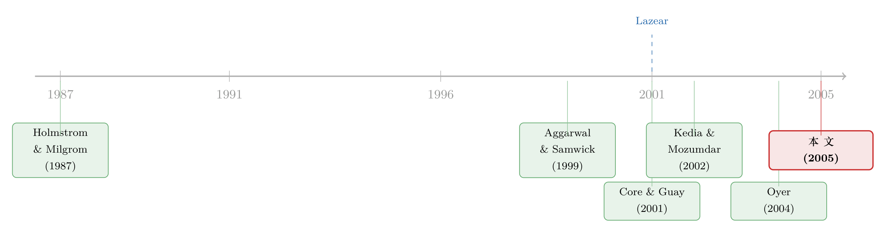

员工人手一份期权：到底是激励，还是一场「双向筛选」？
本文读的是 Oyer & Schaefer (2005, Journal of Financial Economics)：很多公司给【全体员工】（而不只是高管）发股票期权，三种解释里——激励 (incentives)、筛选 (sorting)、留人 (retention)——作者用三套数据做校准 (calibration)，得到一个干净的结论：靠期权给中层员工「打鸡血」在经济上根本算不过账，真正讲得通的是「筛选乐观的人」和「把人留住」。
1 一个被忽略的常识问题
先说一个你大概默认成立、却从没认真想过的事实：上世纪九十年代起，越来越多的美国公司，开始给中层、乃至基层员工大把地发股票期权。
这事其实很怪。
期权这种东西，价值完全押在【一家公司】的股价上。给一个高管发期权，故事很顺——他能影响公司价值，把他的财富和公司绑在一起，天经地义。可你给一个程序员、一个销售、一个仓库主管发期权，他个人的努力对整间公司的市值能有多大撬动？几乎可以忽略。但代价却是实实在在的：你把他大半的人力资本（工资）已经压在这家公司上了，现在又把他的金融财富也压上去，让他承担巨大的、无法分散的特质风险 (idiosyncratic risk)。
一个风险厌恶的人，本该为承担这种风险【索要补偿】。换句话说，公司若想让员工接受「期权换工资」，要么得多给，要么这份期权对公司必须有别的、足以抵消风险成本的好处。
于是问题就摆在这儿了：这些好处到底是什么？ Oyer 和 Schaefer 这篇文章，就是冲着这个问题去的。
2 三个候选答案
作者把可能的好处归成三类，每一类背后都是一套独立的经济逻辑。
第一，激励 (incentives)。 这是教科书答案。把员工财富和公司价值挂钩，缓解代理问题 (agency problem)，让他为公司的利益卖力。
第二，筛选 (sorting)。 这个角度更微妙。期权是一种非现金薪酬，不同的人对「这份期权值多少」的判断天差地别——【乐观】的人觉得公司股价要上天，给期权估值很高；悲观的人则不屑一顾。于是，用期权替代一部分现金工资，等于在【自我筛选】：愿意接受 offer 的，多半是看好公司前景的乐观者。公司因此能用更低的总成本招到「相信公司」的人。
第三，留人 (retention)。 任何递延薪酬都让员工「半路走人」变得昂贵。但期权特别适合干这件事，原因藏在一个相关性里：当股价和劳动力市场行情【正相关】时——科技繁荣时纳斯达克涨、外面挖人的工资也涨——期权恰好把员工手里这笔「不能马上兑现的钱」和他「外面的机会」同步挂钩。外面诱惑大的时候，他手里的期权也正好值钱，于是他舍不得走。
三种解释里，激励是「让人多干活」，筛选是「招对人」，留人是「别让人跑」。它们对数据的含义完全不同，这正是本文能把它们分开来检验的基础。
接着，一个自然的问题是：怎么在数据里把这三者分开？
3 识别策略：不是回归，而是「校准+反推」
这篇文章方法上最聪明的地方，是它【没有】一上来就跑回归。
为什么？因为标准的横截面回归在这里有个绕不过去的坑。激励理论最经典的可检验含义是「风险-激励负相关」：公司风险越大，给员工的股权份额应该越小。可是计量经济学家看不到「努力的边际回报 (marginal return to effort)」\(v\)，也看不到「个人业绩衡量得有多准」。如果在高风险环境里努力恰好更值钱（Prendergast, 2002 就指出过这种情形），那么遗漏变量 (omitted variable) 就会让你在数据里看到「风险越大、持股越多」的【假】正相关。横截面回归在这个问题上，几乎注定是糊的。
于是作者换了条路，分两步走。
第一步，校准 (calibration)。 先写下每种理论的经济模型，然后【假设】我们在数据里观察到的期权包，恰恰是公司最优化的产物。反过来问：要让「观察到的期权规模」成为最优解，模型背后的【参数】必须长成什么样？
- 如果期权是为了激励，那员工的生产函数得有多陡？努力的成本得有多低？
- 如果是为了筛选，员工得对公司前景乐观到什么程度？
- 如果是为了留人，短期工资得波动多大才划算？
如果某套理论要求的参数【离谱到不真实】，我们就有理由把它否掉。这是一种「用反推出来的参数是否可信，来给理论判生死」的思路。
第二步，横截面 logit。 在校准之外，作者再用 SEC 样本跑一组 logit，把「公司是否采用宽基期权计划」对公司与行业特征做回归，作为佐证。
4 三套数据，各有所长
校准和回归要用到三套来源不同、长短互补的数据。
BLS 试点调查 (Bureau of Labor Statistics Pilot Survey, 1999)。 这是描述「全美到底有多普遍」的最佳数据：1,437 家营利性机构、覆盖 680,000 名雇员，响应率超过 75%（因为 BLS 严格保密）。代价是——保密太彻底，研究者连公司身份都不知道，没法把期权行为和公司财务特征匹配上。所以这套数据只用来【描述】。
SEC EDGAR 随机样本。 从 1999 年同时报送 10-K 和 DEF 14A 的约 7,000 家公司里，随机抽 1,000 家，最终能配齐 CRSP/Compustat 财务数据的有 798 家。它代表性好、信息细，是 logit 回归的主力。
NCEO 调查 (National Center for Employee Ownership, 2000)。 提供了中层管理者薪酬与期权包的细节，是校准的基础。缺点是 NCEO 只调查了它【认为】有宽基计划的公司，样本有选择性，不能用来看「跨公司的差异」。
这三套数据没有一套是完美的：BLS 代表性强却匿名，NCEO 细致却有选择偏差，SEC 公开却高度汇总（公司只报「总共发了多少期权」，不报中层员工各自拿了多少）。本文的功力，很大程度上体现在如何用三者互相补位。
一个被前人做错的细节
这里得插一段，因为它关乎本文一个不起眼却致命的贡献。
Core and Guay (2001) 和 Kedia and Mozumdar (2002) 这两篇方法相近的文章，把「非高管 (non-executive)」定义为【除了薪酬最高的五名高管以外的所有人】。问题是：在很多公司，排第六、第七的高管，期权一样拿得盆满钵满。把这些人的期权也算进「非高管」，等于严重高估了真正发给中层员工的量。
作者做了个修正：他们盯住「第二到第五名」高管的平均授予额，假设公司里最高的那 10% 员工平均拿到其【十分之一】的份额，再把高管和这批人的份额从总额里减掉，剩下的才算真正的非高管期权。
别小看这一刀。作者发现，如果不做这个修正、照搬 Core-Guay 的口径，你会得出「大公司更可能有宽基计划」的结论；一旦修正，结论反转成「宽基计划在【小】公司更常见」。 也就是说，Core-Guay「大公司对非高管的期权激励更强」这一发现，很可能只是数据收集口径的副产品 (artifact)——大公司确实给「前五名以外的高管」发更多期权，但它们其实更【不】可能搞真正的全员计划。
（关于「同一份期权，站在不同人的立场上账算得完全不同」，可参见《同一份期权，老板算的账和股东算的账为什么不一样？》。）
5 数据先讲了半个故事
在动模型之前，光是描述性统计就已经很有信息量。
BLS 的数字泼了「全员期权很普遍」一盆冷水：1999 年，全美只有 2.7% 的机构给非所有者发过任何期权；按「至少 20% 员工拿到期权」的宽基标准 (Broad Plan)，更是只有 1.4%。一家典型机构每名员工的期权 Black-Scholes 价值只有 $50；在上市公司里升到 $414；在「确实发了期权」的公司里则超过 $3,000。
但更关键的是【钱发给了谁】。在授予的全部期权价值中：
- 高管只占就业的
2.4%，却拿走31.2%的价值； - 年薪 7.5 万美元以上的非高管占就业
3.7%，拿走61.1%； - 年薪 3.5 万美元以下的员工占就业
67.1%，只分到1.6%。
换句话说，所谓「全员期权」，绝大部分价值仍然集中在金字塔顶端的一小撮人手里。底层员工拿到的，几乎是象征性的。
SEC 样本则补上了公司画像：48.9% 的公司在 1998 年有宽基计划，但因为这些计划集中在小公司，只有 8.3% 的【员工】真的身处宽基计划公司。而且，有宽基计划的公司，明显【更小、增长更快、股票波动更大】，新经济 (new economy) 公司占了很大比重；更耐人寻味的是——有宽基计划的公司里，只有约【五分之三】在 1998 年产生了正现金流，而没有宽基计划的公司里这个比例超过 90%。
这几个相关性——小、波动大、缺现金——后面会反复出现，是理解全文结论的线索。
6 模型与校准：激励解释为什么算不过账
现在进入全文的【一个核心】：把激励理论放到天平上，看它到底能不能撑住观察到的期权规模。
6.1 线性契约的基准模型
作者沿用 Holmstrom and Milgrom (1987, 1991) 的线性契约代理模型。设公司价值 \(V\) 取决于员工努力 \(e\)：
$$ V = v e + \varepsilon_v $$
其中 \(\varepsilon_v\) 是均值为零、方差为 \(\sigma_v^2\) 的正态随机变量，\(v\) 是努力的边际回报。员工绝对风险厌恶系数为 \(j\)，努力成本是二次的、二阶导数为 \(c\)。
在这套设定下，最优契约关于公司价值是线性的，并在员工的激励约束下最大化总确定性等价 (certainty equivalent)。若 \(b\) 是员工持有的公司份额，则最优契约满足：
这给出代理理论的标准比较静态：员工份额 \(b\) 在 (1) 公司价值方差 \(\sigma_v^2\) 越小、(2) 努力边际回报 \(v\) 越高、(3) 成本二阶导 \(c\) 越小、(4) 员工越不怕风险时，越大。
直觉上每一项都很顺：风险越大越不该让员工扛，努力越值钱越该激励，成本越平缓越好驱动。
6.2 校准给出的「数量级」判决
但本文真正关键的一步，不是写下这个公式，而是把它【量出来】。
作者拿 NCEO 数据，针对一个更贴合期权情境（而非线性持股）的代理模型做校准，去比较两样东西：
- 一个风险厌恶的员工，因为被迫持有这份期权所承担的【风险溢价 (risk premium)】——也就是他索要的补偿；
- 这份期权所能换来的【努力增加】给公司带来的价值。
结论非常干脆：对很多公司而言，期权授予所附带的风险溢价，比由此带来的努力增加的成本，要大上好几个数量级 (several orders of magnitude)。
这意味着什么？意味着用期权激励中层员工，绝大多数情况下是一笔亏本买卖：你为了挤出那一点点努力，付出的风险补偿成本高得离谱。
作者把激励解释能成立的条件，逼到了一个极窄的角落：只有当员工能采取对公司价值有巨大影响、自己付出的成本又极小、且公司极难观察他到底有没有做的行动时，给中层发期权才在激励意义上说得通。这显然不是大多数中层岗位的写照。
于是，激励这条路，被关上了。
7 反转：筛选和留人，反而算得过来
把激励否掉之后，故事并没有结束——剩下两个解释，校准给出的参数【完全在合理范围内】。
筛选。 作者算出：一个略微风险厌恶、且预期公司股价【每年上涨约 25%】的员工，会偏好「现观察到的期权+工资」组合，而不是一个对雇主成本相同的纯现金方案。25% 的年度预期涨幅当然乐观，但在 1999 年的科技语境下，绝非天方夜谭。也就是说，只要公司能吸引到这样一批乐观的人，用期权替代现金就是【双赢】——公司省了成本，乐观者拿到了自己估值更高的东西。
留人。 作者发现，如果中层管理者的现货工资 (spot salary) 在几年里会波动 $5,000 到 $20,000，那么公司发期权，可能比「跟着市场工资起伏不断地调薪」更省成本。期权在这里起的是「自动挂钩外部机会」的作用：行情好、外面工资涨时，期权也涨，员工自然被锁住。
（这种「把递延薪酬和外部机会绑在一起、专治跳槽」的逻辑，和《股票还是期权？把「破产」写进高管的工资条》里讨论的取舍是同一族问题。）
logit 回归的佐证
最后，横截面 logit 给三种解释做了一次「投票」。宽基期权计划更常见于：
- 更小的公司——若是激励，本该是「监督成本高」的大公司更需要；小公司更符合筛选/留人；
- 股票回报更波动的公司，尤其是所在【行业】更波动的公司——激励理论预言风险越大份额越小，这与之相悖；但波动大恰恰意味着期权对乐观者的吸引力更强、对留人的挂钩作用更有用；
- 现金流为负的公司——这一点最微妙。
关于负现金流，作者和前人有过一次正面交锋。Core-Guay、Kedia-Mozumdar 认为：缺现金的公司用股权替代工资，是融资约束 (financing constraint) 在起作用。但作者反驳道：这个理由【缺乏过硬的经济学依据】——把期权当「省现金的工具」，只有在员工对公司前景乐观（即筛选模型成立）时才真正讲得通。否则，一个理性的、风险厌恶的员工，会为这份缺现金公司的高风险期权索要高额补偿，公司根本省不下钱。
于是「缺现金 → 发期权」这条线，被作者重新解释回了【筛选】的框架里。一个核心，反复被讲透。
8 文献脉络
把这篇文章放回它所在的那条线，能看得更清楚。
最上游是契约理论的基石：Holmstrom and Milgrom (1987, 1991) 的线性契约模型，给出了「风险-激励权衡」这个所有后续实证的母题。
接着是一大批用高管薪酬检验这一权衡的实证工作——Aggarwal and Samwick (1999)、Jin (2002) 在 CEO 层面确认了「风险越大、激励越弱」的负相关，Murphy (1999) 对整片文献做了综述。这些研究都停在【高管】这一层。
然后，问题自然往下走：当期权开始发给【非高管】，老一套还成立吗？Core and Guay (2001) 与 Kedia and Mozumdar (2002) 率先用横截面方法切入，并得出「激励仍在起作用、融资约束也有份」的结论。
但真正的转折，来自把「为什么发期权」这个问题【拆开】的视角。Lazear (2001) 明确提出：产出挂钩的薪酬，到底是为了激励、留人，还是筛选？这三种动机必须分开看。Oyer (2004) 进一步追问「为什么公司用没有激励效果的激励工具」。

本文 (2005) 正站在这条线的交汇点上：它接过 Lazear 的「三分法」，用校准这一不同于横截面回归的武器，第一次给出了「在中层员工身上，激励算不过账、筛选和留人才成立」的量化判决，并顺手纠正了前人因「非高管」口径不当而得出的方向性错误。
9 评论与延伸（Q&A + 研究方向）
(a) 几个可能的疑问
Q：校准结论高度依赖「观察到的期权包是最优解」这个假设，靠谱吗？
这确实是校准方法的命门。如果公司其实是【非最优】地、跟风地发期权（比如九十年代末的从众、会计准则的便利），那么「反推参数是否合理」的逻辑就会失灵——你反推出的荒谬参数，可能只反映公司没在优化，而非激励理论错了。作者的辩护是：他们要的不是点估计，而是【数量级】。风险溢价比努力成本大「好几个数量级」，这种悬殊不太可能仅靠「公司没优化好」来解释。
Q：否掉激励，会不会只是因为把「努力对中层的价值」设得太低？
有这个风险，但作者把它前置成了明确的边界条件：激励要成立，需要员工能做「价值影响极大、成本极小、又极难观察」的行动。这等于把举证责任交还给读者——你若相信激励解释，就得指出哪些中层岗位同时满足这三条。对绝大多数岗位，这很难。
Q：筛选和留人在数据里能分得开吗？
严格说，分得并不彻底。两者在 logit 里给出的预测高度重叠（都指向小、波动大、新经济公司）。本文的贡献是把这两者一起从激励里【摘出来】，而非在二者之间分出胜负。这也是后续研究的空间。
Q：底层员工只拿到 1.6% 的价值，那「全员期权」是不是名不副实？
某种意义上是的。描述性数据显示价值高度集中在顶端。但这反而强化了筛选/留人的故事：公司真正想筛选和留住的，是那批高薪、关键的非高管（拿走 61% 价值的那 3.7%），底层的象征性授予更像是计划的「副产品」或文化信号。
Q：股票波动大就发期权，会不会是「波动大的公司恰好是科技公司、科技公司恰好流行发期权」的伪相关？
这是合理的担忧。作者控制了新经济虚拟变量，且强调是【行业】层面的波动更显著，一定程度上缓解了「单纯科技标签」的解释。但横截面终究是相关性，作者自己也承认 logit 只是校准之外的佐证，而非因果。
Q：和「融资约束」解释到底差在哪？
表面现象相同（缺现金公司更爱发期权），但机制不同。融资约束说「用股权省现金」；本文说「除非员工乐观，否则风险厌恶的员工不会平价接受期权，根本省不下钱」。本文把融资约束的现象，重新收编进了筛选的框架——这是一个解释层面的、而非数据层面的分歧。
(b) 几个可能的研究问题与提案
1. 把校准搬到「外资持有人结构」上。
【经济故事】乐观者筛选的逻辑可以推广：当一家公司的股东里乐观的外资占比高时，是否更倾向用股权激励本地员工？外资乐观情绪和员工持股是否互补？ 【可行性】中。需要把跨国持股数据（如 FactSet/13F 类）与员工持股计划匹配，识别靠外资准入的自然实验（如指数纳入）。难点在员工层面数据难得，识别偏弱。
2. 用更外生的工资波动来检验「留人」校准。
【经济故事】本文留人解释的核心参数是「现货工资波动 $5,000–$20,000」。能否找到一个外生冲击（如行业性劳动力需求骤变）来直接检验「工资波动越大、宽基期权越多」？ 【可行性】高。可用 BLS/行业工资指数构造行业层面工资波动，匹配 SEC 期权计划数据做面板。数据现成，识别清晰，是 doable 的延伸。
3. 公司债持有人会怎么看「全员期权」？
【经济故事】期权稀释股权、且把员工财富押注于股价，可能影响公司风险与违约概率。债权人是否会在信用利差里给宽基期权计划定价？这把员工持股和信用市场连了起来。 【可行性】中。需要把期权计划数据匹配到公司债二级市场利差（TRACE）。挑战在于期权计划的内生性——风险大的公司既发期权又利差高，需找工具变量或事件。
4. 会计准则变更（费用化）是否检验了「激励 vs 筛选」？
【经济故事】SFAS 123R 强制期权费用化后，若公司发期权纯为激励，费用化不该改变行为；若为筛选/省现金的「会计便利」，则应大幅退潮。准则变更提供了一个准自然实验。 【可行性】高。2006 年前后是干净的断点，数据（Compustat、ExecuComp、Execucomp 之外的员工持股披露）可得，DiD 可行。这是把本文结论做因果化的最直接路径。
5. 全员期权与离职率的微观证据。
【经济故事】留人解释预言：股价与外部机会正相关时，期权才有锁人效果。能否用员工层面离职数据，检验「期权在外部市场火热时留人效果更强」这一交互含义？ 【可行性】低到中。需要员工-公司匹配的离职面板（如领英类或行政数据），这类数据稀缺且匹配成本高，识别外部机会的代理变量也不易。机制最干净，但数据最难。
10 我的判断
这篇文章的贡献，不在于发现了什么新现象，而在于【方法上的纪律】：当横截面回归注定被遗漏变量搅浑时，它用「校准+反推参数合理性」这条路，把一个看似只能定性争论的问题，逼出了一个量化的、数量级层面的判决。「激励解释的风险溢价比努力成本大好几个数量级」——这种悬殊，比任何一个显著的回归系数都更有说服力。顺手纠正 Core-Guay「非高管」口径导致的方向性错误，也是扎实的一笔。
对识别，我有两点保留。其一，校准的全部重量都压在「观察到的期权是最优解」这一假设上；在九十年代末那个明显有从众、有会计套利、有非理性繁荣的环境里，这个假设比平时更可疑——公司也许根本没在优化，而是在跟风。其二，筛选和留人始终没被【分开】，本文只是把它们打包从激励里摘出来，二者孰轻孰重仍是悬案。
后续我最想看到的，是把这套结论【因果化】：SFAS 123R 的费用化改革是一个现成的、干净的断点，足以检验「全员期权究竟是激励工具，还是省现金/筛选的会计便利」。如果费用化之后宽基计划大面积退潮，那本文「激励解释站不住、它本质是筛选与留人」的判断，就会从一个精巧的校准推断，变成一个有外生冲击背书的因果结论。
参考文献
- Aggarwal, R., Samwick, A.A. (1999). The other side of the tradeoff: the impact of risk on executive compensation. Journal of Political Economy 108, 65–105.
- Core, J.E., Guay, W.R. (2001). Stock option plans for non-executive employees. Journal of Financial Economics 60, 253–267.
- Holmstrom, B., Milgrom, P.R. (1987). Aggregation and linearity in the provision of intertemporal incentives. Econometrica 55, 308–328.
- Holmstrom, B., Milgrom, P.R. (1991). Multi-task principal-agent analyses: incentive contracts, asset ownership and job design. Journal of Law, Economics and Organization 7, 524–552.
- Jin, L. (2002). CEO compensation, diversification, and incentives. Journal of Financial Economics 66, 29–63.
- Kedia, S., Mozumdar, A. (2002). Performance impact of employee stock options. Working paper, Harvard Business School.
- Lazear, E.P. (2001). Output-based pay: incentives, retention or sorting? Unpublished working paper, Stanford University.
- Mehran, H., Tracy, J. (2001). The effect of employee stock options on the evolution of compensation in the 1990s. Federal Reserve Bank of New York Economic Policy Review 7, 17–34.
- Murphy, K.J. (1999). Executive compensation. In: Ashenfelter, O., Card, D. (Eds.), Handbook of Labor Economics, vol. 3. North-Holland, Amsterdam.
- Oyer, P. (2004). Why do firms use incentives that have no incentive effects? Journal of Finance 59, 1619–1640.
- Prendergast, C. (2002). The tenuous tradeoff between risk and incentives. Journal of Political Economy 110, 1071–1102.